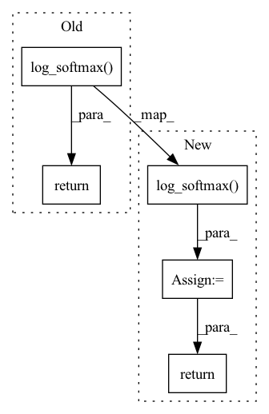

Pattern ID :1381

Before Change
self.smoothing = smoothing
def forward(self, pred, target):
log_prob = F.log_softmax(pred, dim=-1)
dist = torch.empty_like(pred).fill_(self.smoothing / (pred.size(-1) - 1))
dist.scatter_(dim=-1, index=target[..., None], value=(1 - self.smoothing))
loss = F.kl_div(log_prob, dist)
return loss
After Change
chunked_pred = torch.chunk(pred, chunks=self.chunk, dim=0)
chunked_target = torch.chunk(target, chunks=self.chunk, dim=0)
chunked_mask = torch.chunk(mask, chunks=self.chunk, dim=0)
log_prob = [F.log_softmax(p, dim=-1) for p in chunked_pred]
loss = [self.smoothed_loss(p, t, m)[None]\
for p, t, m in zip(log_prob, chunked_target, chunked_mask)]
loss = torch.cat(loss, dim=0).sum()
return loss / mask.sum()
def smoothed_loss(self, log_prob: torch.Tensor, target: torch.Tensor, mask: torch.Tensor) -> torch.Tensor:
dist = torch.full_like(log_prob, fill_value=self.smoothing / (self.vocab - 2))
In pattern: SUPERPATTERN
Frequency: 3
Non-data size: 5
Instances
Fragment ID: 3973672
Project Name: rick-mccoy/reformer-pytorch
Commit Name: 3411114d22e0bfcae2e106f5c82a3211da83f409
Time: 2020-02-29
Author: rickmccoy3141@gmail.com
File Name: model/labelsmoothing.py
M Class Name: LabelSmoothing
N Class Name: LabelSmoothing
M Method Name: forward(4)
N Method Name: forward(3)
M Parent Class: nn.Module
N Parent Class: nn.Module
M File Name: model/labelsmoothing.py
N File Name: model/labelsmoothing.py
M Start Line: 11
M End Line: 16
N Start Line: 13
N End Line: 24
'>
Before Change
x = F.relu(self.fc1(x))
x = F.relu(self.fc2(x))
x = self.fc3(x)
return F.log_softmax(x, dim=1)
After Change
x = F.relu(self.fc1(x))
x = F.relu(self.fc2(x))
x = self.fc3(x)
x = F.log_softmax(x, dim=1)
return x
class ResNetClassifier(nn.Module):
'>
Fragment ID: 3973665
Project Name: tsingz0/pfl-non-iid
Commit Name: 20524d468460f45118d0c169b508fcd440eb79c9
Time: 2021-06-01
Author: 2719584131@qq.com
File Name: system/flcore/trainmodel/models.py
M Class Name: CNNCifar
N Class Name: CNNCifar
M Method Name: forward(2)
N Method Name: forward(2)
M Parent Class: nn.Module
N Parent Class: nn.Module
M File Name: system/flcore/trainmodel/models.py
N File Name: system/flcore/trainmodel/models.py
M Start Line: 199
M End Line: 201
N Start Line: 199
N End Line: 201
'>
Before Change
x = F.relu(self.fc1(x))
x = F.relu(self.fc2(x))
x = self.fc3(x)
return F.log_softmax(x, dim=1)
cfg = {
After Change
x = F.relu(self.fc1(x))
x = F.relu(self.fc2(x))
x = self.fc3(x)
x = F.log_softmax(x, dim=1)
return x
cfg = {
'>
Fragment ID: 3973666
Project Name: tsingz0/pfl-non-iid
Commit Name: 20524d468460f45118d0c169b508fcd440eb79c9
Time: 2021-06-01
Author: 2719584131@qq.com
File Name: system/flcore/trainmodel/models.py
M Class Name: CifarNet
N Class Name: CifarNet
M Method Name: forward(2)
N Method Name: forward(2)
M Parent Class: nn.Module
N Parent Class: nn.Module
M File Name: system/flcore/trainmodel/models.py
N File Name: system/flcore/trainmodel/models.py
M Start Line: 86
M End Line: 87
N Start Line: 86
N End Line: 88